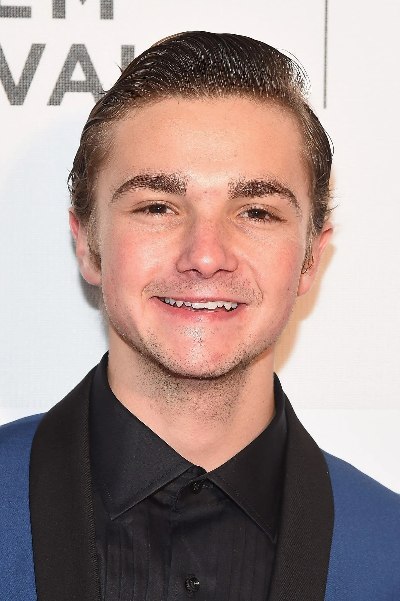

Olá! Eu sou
Paulie Litt
Engenheiro de Software e entusiasta de Data Center
Construindo produtos digitais de qualidade com paixão e propósito.



Olá! Eu sou
Construindo produtos digitais de qualidade com paixão e propósito.
Sou Engenheiro de Software com sólida experiência em desenvolvimento de sistemas e infraestrutura de TI. Ao longo da minha carreira, me especializei em soluções de alta performance, com foco em qualidade de código, segurança e escalabilidade.
Possuo formação em Análise e Desenvolvimento de Sistemas e diversos cursos na área de Data Center pela Microsoft. Atualmente, atuo com tecnologias modernas e colaboro com times ágeis para criar produtos digitais que realmente fazem a diferença.
Além disso, tenho experiência robusta em desenvolvimento Front-End, trabalhando com HTML5, CSS3, JavaScript (ES6+), frameworks modernos como React e Vue.js, e práticas de design responsivo e acessibilidade. Busco garantir interfaces intuitivas e performáticas, integrando a experiência do usuário com as necessidades do negócio.
Página inicial da Netflix recriada com HTML e CSS. Praticando grids, carrossel de filmes e design responsivo.
Landing page do Starbucks com menu interativo e troca de cores do tema usando JavaScript básico.
Recriação do site oficial do Flamengo, com seções de notícias, agenda de jogos e galeria de fotos. Praticando organização de conteúdo, cores temáticas (rubro-negras) e elementos interativos simples.
Landing page inspirada no design da Pepsi, com destaque para produtos e promoções.